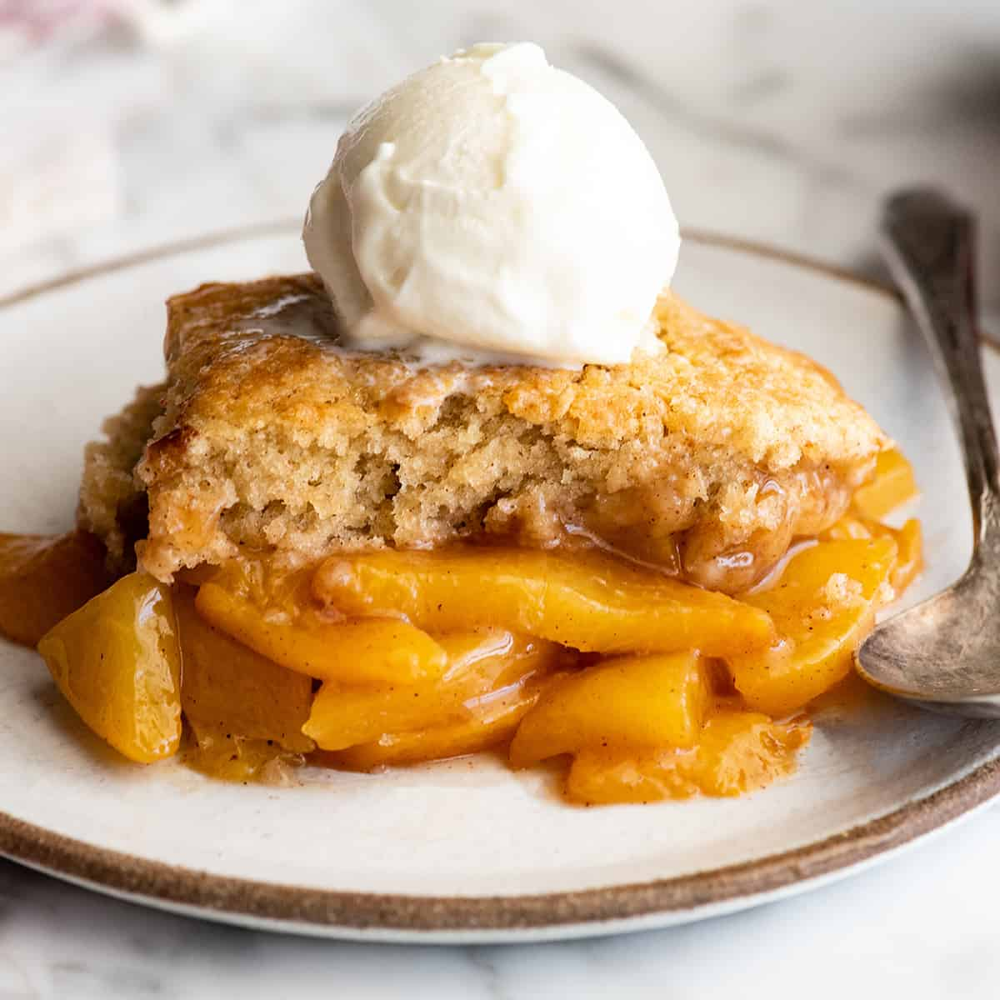

Peach Cobbler

Description:
An easy peach cobbler made with just 5 common ingredients you probably always have on hand?
That's right!
This simple dessert comes together in minutes. Serve warm with vanilla ice cream and whipped cream.
Ingredients:
- 1/2 cup butter, melted
- 1 cup flour
- 1 cup white sugar
- 1 cup milk
- 16 oz sliced peaches
Instructions
- Mix flour, sugar, and milk in a bowl until there are no lumps.
- Melt the butter in a cast-iron skillet, then top with the flour mixture.
- Add the peaches (with the syrup) to the skillet and stir until the peaches
are evenly spread around the skillet and coated with the flour mixture.
- Bake peach cobbler for 30 to 45 minutes at 350 degrees F. Cooling slightly
after baking ensures the cobbler sets nicely for easy serving.
- Optional: Add scope of vanilla icecream
Home Page